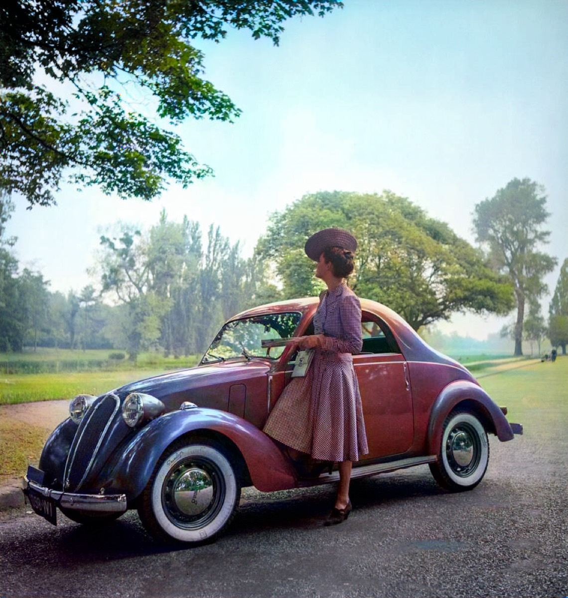
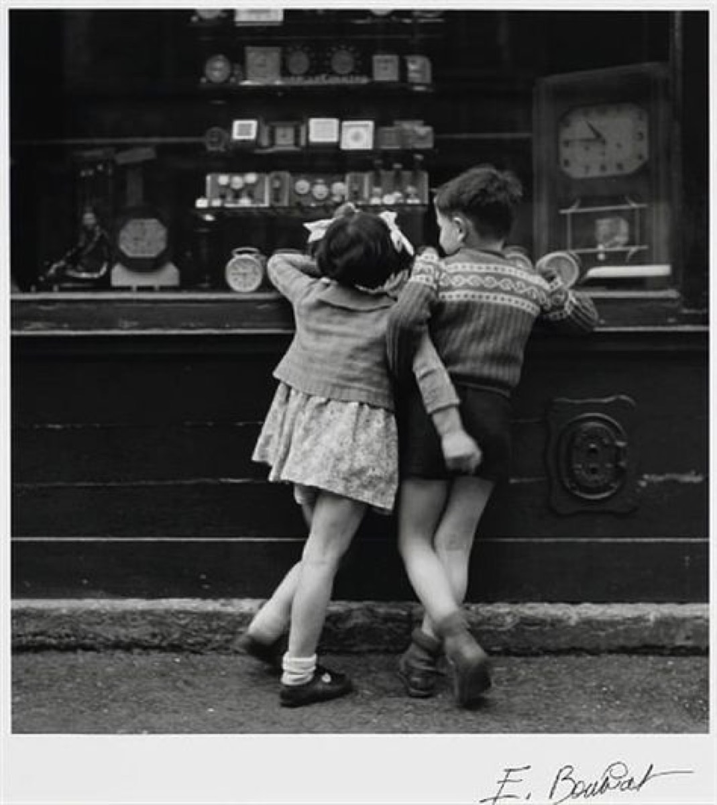
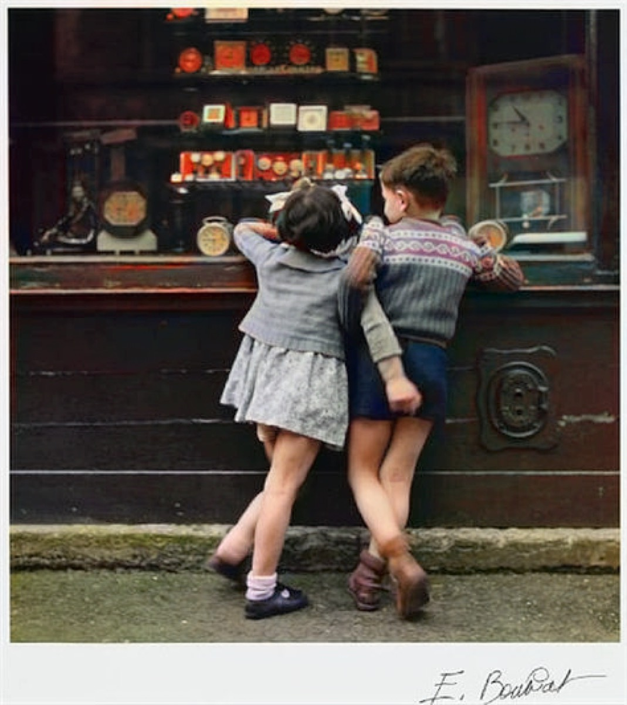
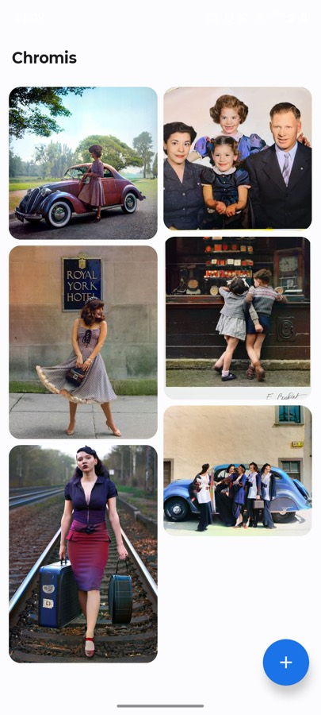
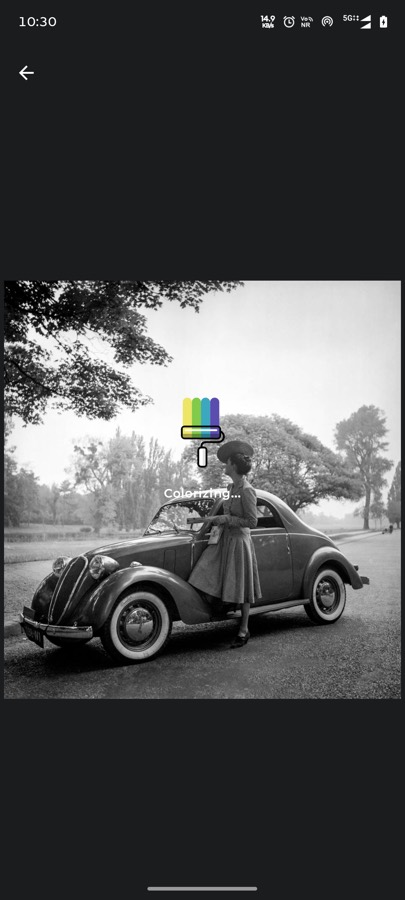
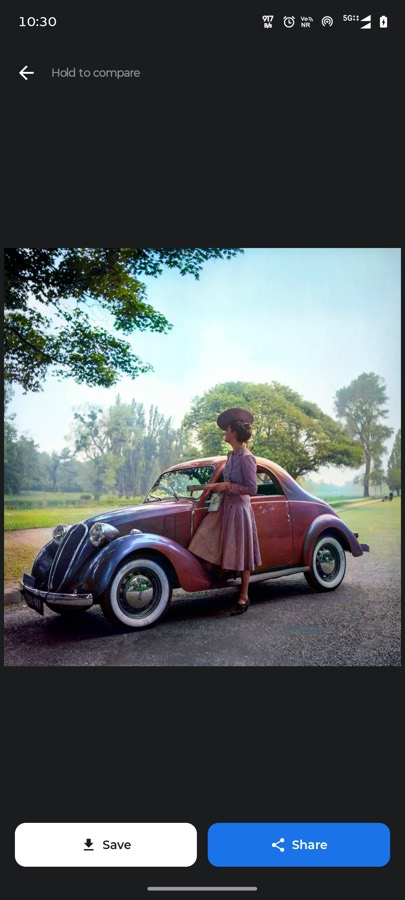

Chromis: I put a colorization model on a phone and cut the network cable
Old family photos are the last thing you should be uploading to a stranger's server. So I built a colorizer that physically cannot — the app ships without the INTERNET permission.

Why bother, when the web is full of these
Search for a photo colorizer and you'll find fifty of them. Almost all work the same way: you upload your picture, a GPU somewhere else does the work, you get an image back. Fine for a meme. Considerably less fine for the shoebox of family photographs my relatives keep asking me to "fix on the computer".
Those images are the definition of data you don't hand over casually. There's no way to know how long a server keeps them, what gets logged, or what a terms-of-service change next year will decide it's allowed to do with them. And the honest answer to "is it safe?" is that you're trusting a privacy policy, which is a document, not a guarantee.
So the goal for Chromis was narrow and slightly stubborn: do the whole thing on the phone. Not "mostly offline". Not "we only send anonymized data". Offline in the sense that the network stack is not available to the app at all.
The line I'm proudest of is one that isn't there. There is no android.permission.INTERNET in the manifest. Android won't grant a socket to an app that never declared it, so the app cannot phone home even if I wanted it to, even if a dependency tried. It's not a promise about my intentions — it's a property of the build, and you can verify it in about thirty seconds with aapt dump permissions.
What it does
Pick a black and white photo. Wait a few seconds. Get it back in colour. Hold your finger on the screen to see the original underneath, lift it to see the colour again — that comparison gesture ended up being the thing people actually play with.
What sells it for me in that pair isn't the car. It's the grass and the trees in the background, which the model has separated from the road surface without anyone telling it where the edges are, and the skin tones, which are the fastest thing to get wrong and the first thing your eye catches.


The app itself
I kept the UI deliberately small. One activity, two screens, no settings, no onboarding, no account. A grid of everything you've colorized, a plus button, and a result screen with save and share.



The grid is a staggered Pinterest-style layout because colorized photos are all different aspect ratios and forcing them into squares wastes the good part of the image. It persists across restarts, and long-pressing an item deletes it. That's the entire feature set. I removed more than I added.
How it actually works
The interesting part is that the model never sees a colour image, and never produces one either.
Colour images can be represented in CIE Lab, which splits a pixel into L (lightness) and a and b (the two chrominance channels that carry all the colour). The useful property: a black and white photograph is already the L channel. Nothing is missing from it — the brightness information is complete. What's absent is a and b.
So colorization stops being "invent a new picture" and becomes something much narrower: given L, predict a and b. Then staple the original L back on. The structure, the grain, the sharpness, every detail of the original photograph survives untouched, because the model is not allowed anywhere near it. It only gets to choose colours.
The pipeline in DDColorEngine.kt is five steps:
- Decode the picked image to a bitmap and hand it to OpenCV.
- Convert RGB to Lab and split out the channels. Keep the full-resolution L.
- Downscale L to 512×512, normalise, and feed it to DDColor as a 1×3×512×512 tensor through ONNX Runtime.
- Take the predicted a and b, upscale them back to the photo's real dimensions.
- Merge them with the original full-resolution L, convert Lab back to RGB, done.
Step five is the whole trick for output quality. Inference happens at 512×512 because that's what the model wants and what a phone can afford. But you never see a 512×512 image. Chrominance is low-frequency information — broad regions of "this is skin", "this is foliage" — so it upscales without visible damage. Detail lives in luminance, and luminance is never downscaled at all. A 12-megapixel photo comes out at 12 megapixels, still sharp.
Defensive code around the model output
One thing I'd flag for anyone doing FP16 inference: the engine sweeps the model's output for NaN and infinity before using it, logs the observed range, and substitutes a neutral 128 for any bad value rather than letting it through.
That isn't paranoia for its own sake. FP16 has a narrow range, and a single stray value converted into a Lab channel doesn't produce a subtle artifact — it produces a screaming magenta block across part of the picture. Clamping into 0..255 on the way out costs nothing and turns a catastrophic failure into, at worst, a slightly desaturated patch.
What's in it
- Model
- DDColor-Tiny, FP16 ONNX, 129 MB
- Inference
- ONNX Runtime 1.19.2, 4 inter-op / 4 intra-op threads, all graph optimizations on
- Image processing
- OpenCV 4.5.3 for Lab conversion, resizing and channel merging
- UI
- Jetpack Compose with Material 3, single activity
- Concurrency
- Kotlin coroutines — inference off the main thread
- Minimum
- Android 8.0 (API 26), around 200 MB RAM during inference
- Permissions
- Photo access only. No internet, no analytics, no crash reporting
- Licence
- MIT
A 129 MB model inside the app is the obvious cost, and I want to be straight about it rather than pretend it's free. It's why the repo needs Git LFS, and it's a real download for a user. The alternative was shipping a 15 MB app that uploads your grandmother's photograph to a server, and for this particular application I think that trade lands clearly on one side.
Things that bit me
The model is copied out of assets on first run. ONNX Runtime wants a real file path, and assets inside an APK aren't one. So the first launch writes the 129 MB model into filesDir and every launch afterwards reuses it. It works, but it means first launch is slow and the app effectively occupies its model twice on disk. If I revisit this, memory-mapping from a compressed-off asset is the direction.
Per-pixel loops in Kotlin are exactly as slow as you'd expect. The engine walks pixels individually to build and unpack the OpenCV matrices, and on large images that copying is a genuine chunk of the total time — on some photos it rivals the inference itself. Bulk Mat.put calls over a whole row, or moving the conversion into native code, is the single biggest speedup still on the table. I shipped the readable version first, which I don't regret, but I know where it is.
Colorization has no correct answer. This is the conceptual one. The model isn't recovering the original colours, because that information was never captured — it's producing a plausible guess from everything it learned about what the world usually looks like. A dress that was actually green may come back blue. Both are defensible readings of the same grey. Once I stopped treating that as a bug, the results got much easier to enjoy.
Where this fits
Chromis is part of a set of small offline AI apps I've been building — local chat, local translation, on-device document and photo tools — all circling the same idea: a phone in 2026 is a genuinely capable inference machine, and a surprising number of things we route through a datacentre don't need to leave the device at all.
Not everything fits. Large language models still strain a handset. But image models in the 100 MB range, running a few seconds per photo, are comfortably within budget on hardware people already own. That's a real capability, and mostly what's missing is people building for it.
The code is MIT licensed and the interesting part is one file. If you're curious how the Lab trick works in practice, read the engine — it's about 130 lines and it'll take you five minutes.
← All posts